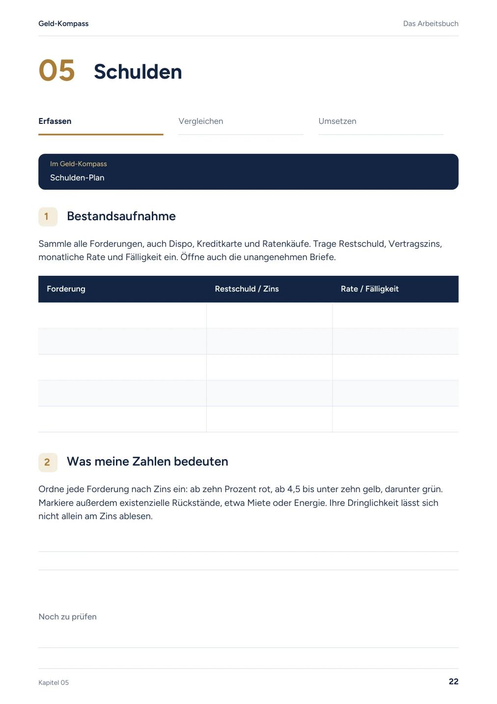
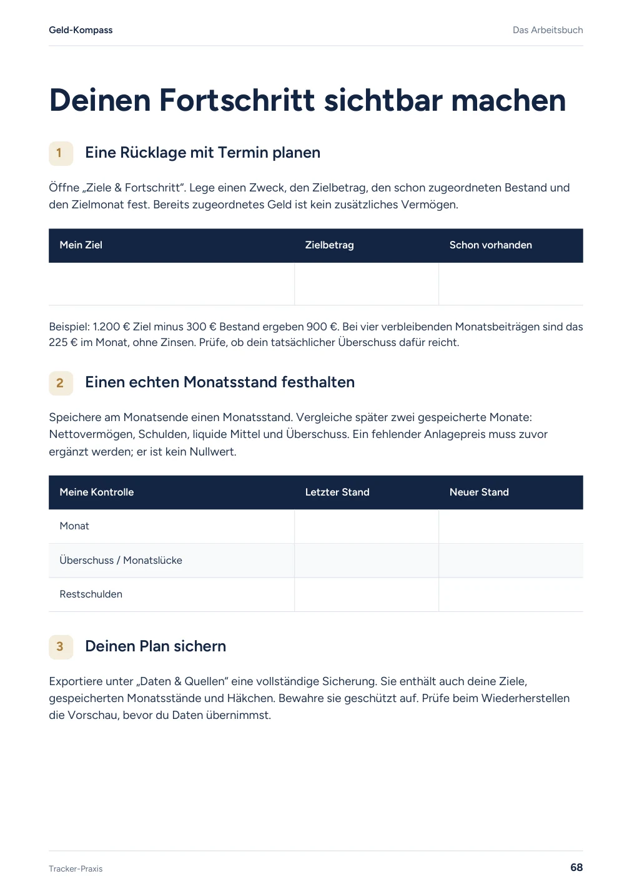
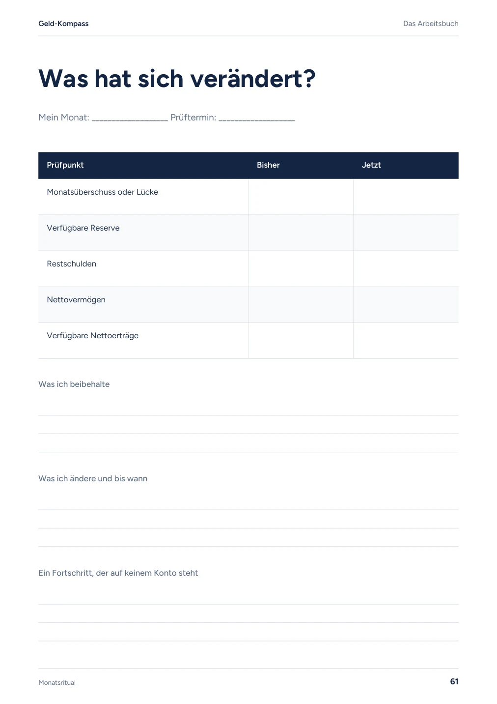

Das Arbeitsbuch zum Hauptbuch
Deine Zahlen. Deine Entscheidungen. Dein nächster Schritt.
Das Hauptbuch erklärt die Zusammenhänge. Das Arbeitsbuch führt dich durch deine eigene Situation: erfassen, vergleichen und umsetzen.
69 Seiten mit Übungen zu allen 16 Kapiteln und dem Bonuskapitel, Tracker-Praxis, Monatsauswertung und einem 30-Tage-Startplan.
Originalseiten ansehen9,99 € einmalig · digitales Arbeitsbuch
69 Seiten · PDF zum Ausdrucken oder Beschriften in einer Notiz-App
Einblick · Originalseite 22
Deine Schulden vollständig sehen.
Kreditkarte, Dispo, Ratenkauf: Die erste Übung hilft dir, Forderungen und Fälligkeiten zusammenzutragen. Dringende Rückstände hältst du getrennt von der reinen Zinsreihenfolge fest.
Sammle deine Forderungen und wähle anschließend nur eine zusätzliche Rate, die dein Monat wirklich trägt.
Im kostenlosen Kompass umsetzen
Einblick · Originalseite 68
Eine Rücklage, die zu deinem Monat passt.
Ein Ziel braucht einen Betrag, einen Termin und einen tragbaren Monatsbeitrag. Diese Seite verbindet die Planung mit deinen eigenen Monatsständen und einer Sicherung deiner Einträge.
Lege im Kompass ein Ziel an. Halte dann fest, welcher Betrag noch fehlt und wann du den Plan wieder prüfst.
Im kostenlosen Kompass umsetzen
Einblick · Originalseite 61
Aus Zahlen wird eine Entscheidung.
Vergleiche Überschuss, Reserve, Schulden und Nettovermögen. Notiere, was du beibehältst und was du bis zum nächsten Monatsabschluss ändern möchtest.
Aktualisiere erst deine Bestände. Vergleiche zwei echte Monatsstände und lege einen nächsten Schritt fest.
Im kostenlosen Kompass umsetzen
Verstehen, rechnen, entscheiden.
Im Hauptbuch findest du die Gedanken hinter deinem Plan. Der kostenlose Geld-Kompass rechnet mit deinen Zahlen. Im Arbeitsbuch hältst du Annahmen, Entscheidungen und die nächsten Schritte fest.
Das PDF kannst du ausdrucken oder in einer geeigneten Notiz-App beschriften. Es enthält keine ausfüllbaren Formularfelder. Das Hauptbuch und persönliche Beratung sind nicht enthalten.
Drei Originalseiten als PDF ansehen